Jogadores Importantes na história do Beisebol
Babe Ruth
George Herman Ruth, ou Babe Ruth, é o jogador de beisebol mais conhecido por ser um dos jogadores mais talentosos de todos os tempos. Crescendo em Baltimore, Maryland, Babe Ruth assinaria e jogaria nas ligas menores pelo Baltimore Orioles. Ele é mais conhecido por seu tempo no New York Yankees, onde venceu quatro World Series com a equipe. Além disso, Ruth é conhecida por manter uma quantidade incrível de recordes, desde RBIs até a percentagem de slugging. Ele é conhecido por ter muitos apelidos, desde “O Grande Bambino” até “Sultão de Swat”. Seu atletismo e talento são, em última análise, o que o tornou uma das primeiras pessoas a ser introduzido no Hall of Fame do Beisebol como um dos atletas mais conhecidos de todos os tempos.
Ruth é conhecido por ter recebido muitos prémios durante seu tempo na MLB. Ele foi MVP em 1923 e recebeu o prémio Jack Lang em 1931. Eventualmente, tornou-se uma das primeiras pessoas a ser introduzido no Hall of Fame do beisebol em 1936. Anos depois de sua morte, ele recebeu a Medalha Presidencial da Liberdade em 2018. Além disso, Babe Ruth tinha muitos títulos da Liga Americana e na World Series. Durante seu tempo no Boston Red Sox, Ruth ajudou a equipe a vencer três títulos da World Series. Quando ele se juntou ao New York Yankees, Ruth levou a equipa a sete Campeonatos da Liga Americana e quatro títulos da World Series. Outras conquistas de Ruth incluem liderar a liga em porcentagem de rebatidas, bases em bolas e porcentagem de base várias vezes ao longo de sua carreira.
Hank Aaron

Hank Aaron é um dos melhores rebatedores, de poder, no beisebol e jogou na posição de defesa direito (RF). Aaron, agora aposentado, cresceu em Mobile, Alabama, e destacou-se ainda jovem após um excelente e breve período nas Ligas Negras, aos 18 anos, e rapidamente chamou a atenção dos clubes da Major League (MLB) juntando-se ao Milwaukee Braves onde ficou durante a maior parte de sua carreira. Hank é famoso por quebrar o recorde de home runs, de todos os tempos, de Babe Ruth quando conquistou seu 715o home run, na carreira, em 1974. Além de ser considerado um grande jogador de beisebol de todos os tempos, é reverenciado como um pioneiro do movimento de direitos civis.
Foi um dos jogadores de beisebol mais consistentes de todos os tempos. A cada ano, ele constantemente postava uma média de rebatidas acima de .300, enquanto também rebatia mais de 30 home runs. Aaron jogou 21 temporadas com os Braves durante seus 23 anos de carreira. Foi um ídolo para muitos americanos durante o movimento dos direitos civis por causa das suas conquistas numa liga predominantemente branca.
Hank Aaron não recebeu muito reconhecimento durante sua carreira de jogador por causa de sua personalidade tranquila e das tensões raciais na América. Apesar da falta de elogios, conseguiu mudar os livros de história. O ano de 1957 foi o melhor ano da carreira de Hank Aaron, ganhou seu único prêmio de MVP da NL e também levou os Braves a uma vitória na World Series. O momento mais histórico da sua carreira ocorreu no ano de 1974, quando estabeleceu um novo recorde de home runs da Major League. Ele terminou sua carreira com incríveis 755 home runs e atualmente está em segundo lugar na lista de todos os tempos. Foi selecionado para o Hall of Fame da Major League Baseball (MLB) no ano de 1982. A sua carreira é incomparável, e é reconhecido como “All time Great”. Em 2002, recebeu a Medalha Presidencial da Liberdade pelo seu excelente trabalho filantrópico e sua dedicação na mudança da desigualdade racial.
Willie Mays
Willie Mays, William Howard Mays, é um ex-jogador de beisebol profissional americano que jogou no campo central pelo New York/San Francisco Giants e pelo New York Mets durante sua carreira. Nasceu em Westfield, Alabama, em 6 de maio de 1931. Aos 16 anos, juntou-se ao Birmingham Barons na Liga Americana Negra, até os New York Giants comprar o seu contrato em 1950. Durante sua temporada de estreia, Mays ganhou o Rookie do Ano da NL. Seus anos de jogo foram interrompidos em 1952 e 1953, quando ele foi convocado para servir no Exército dos EUA durante a Guerra da Coreia. Mays jogou 21 temporadas com a organização Giants e suas duas finais com os New York Mets, rebatendo mais de .300 dez vezes e terminou sua carreira com 3.283 rebatidas. Em 1979, Willie Mays foi introduzido no National Baseball Hall of Fame, e é elogiado como um dos melhores jogadores de beisebol de todos os tempos e um dos únicos verdadeiros “five-tool player” - descreve um jogador raro que se destaca em todas as cinco principais ferramentas físicas (velocidade, arremesso, defesa, rebatida por média e rebatida por força).
Após sua temporada de estreia, foi nomeado o Rookie do Ano da NL de 1951. Em 1954 e 1965, ele foi eleito MVP da Liga Nacional, além de ganhar 12 Gold Glove Awards como Center Fielder. Ele também foi um All-Star 24 vezes. Liderou a liga em home runs, em bases roubadas quatro vezes, em porcentagem de slugging cinco vezes, em bases totais três vezes e em triplos três vezes. Ele também foi o campeão de rebatidas da NL de 1954 e o líder de home run da Liga Nacional em 1955, 1962, 1964 e 1965. De 1956 a 1959, Mays foi o líder em bases roubadas na Liga Nacional por quatro temporadas consecutivas. Quando ele se aposentou, Mays foi o terceiro de todos os tempos em homeruns (atualmente em 6o), sétimo em corridas marcadas e 12o em RBIs e rebatidas. Os San Francisco Giants aposentaram o número de Mays em 1972, e mais tarde ele foi introduzido no National Baseball Hall of Fame em 1979. Willie Mays também recebeu o Prêmio Roberto Clemente de 1971. Cada clube nomeia um jogador, e o prémio é dado a um dos 30 indicados com excelência em campo e envolvimento da comunidade. Em 2000, uma estátua de bronze de 23 toneladas de Willie Mays foi revelada fora do Oracle Park (então Pacific Bell Park) em sua primeira temporada. O endereço do estádio também é 24 Willie Mays Plaza, em homenagem ao lendário jogador de bola. Mays recebeu vários diplomas honorários, incluindo de Yale e Dartmouth. Em 2007, Mays foi introduzido no California Sports Hall of Fame e em 2015 foi premiado com a Medalha Presidencial da Liberdade, a mais alta honra civil dos Estados Unidos, pelo presidente Barack Obama.
Barry Bonds
Barry Bonds é o rei dos home runs de todos os tempos da Major League Baseball (MLB). Bonds jogou 22 anos na MLB pelos Pittsburgh Pirates e pelos San Francisco Giants. Ele foi um defensa esquerdo (LF) e foi selecionado para a equipa All-Star 14 vezes. Venceu o prémio de Jogador Mais Valioso da Liga Nacional sete vezes. Bonds é uma figura altamente controversa por seu uso de Performance Enhancing Drugs (PED's), mas, no entanto, é considerado um dos melhores rebatedores de todos os tempos.
Os elogios de Barry Bonds começaram na faculdade. Como júnior, ele ganhou as honras da segunda equipe All-American. Uma vez que ele chegou ao nível profissional de beisebol, Bonds rapidamente causou uma impressão. Ele foi o sexto na votação de Rookie do Ano da NL no seu primeiro ano. Em 1990, Bonds ganhou seu primeiro prêmio de MVP, fez a equipe All-Star e ganhou uma Gold Glove e um Silver Slugger. Em 1991, Bonds ficou em segundo lugar na votação do MVP e ganhou seu segundo Gold Glove e Silver Slugger. De 1992 a 1998, Bonds fez a equipe All-Star todos os anos, ganhou mais dois prêmios de MVP e ganhou mais seis Gold Gloves. Em 1996, Bonds atingiu a marca de 40/40 de home runs e steals, embora tenha atingido a marca de 30/30 em várias ocasiões. Em 2001, Bonds retornou à forma de MVP, estabelecendo o recorde de home runs de uma única temporada com 73 Home runs. Ele ganhou o prêmio de MVP todos os anos de 2001 a 2004, uma das corridas mais dominantes de todos os tempos. Não foi até sua última temporada, 2007, que Bonds fez outro All-Star Game. Até hoje, Bonds ainda detém os recordes de uma única temporada e de home runs de todos os tempos, bem como o recorde de caminhadas.
Menções Importantes:
| Roger Clemens | Cy Young | Alex Rodriguez | Pedro Martinez | Ty Cobb | Stan Musial | Walter Johnson |
| 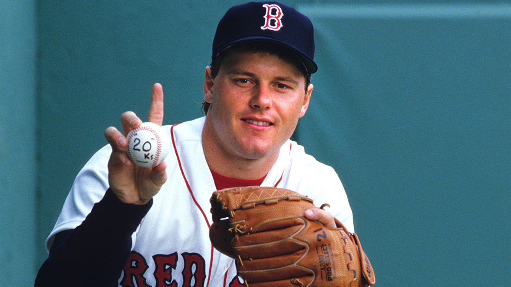 |

|
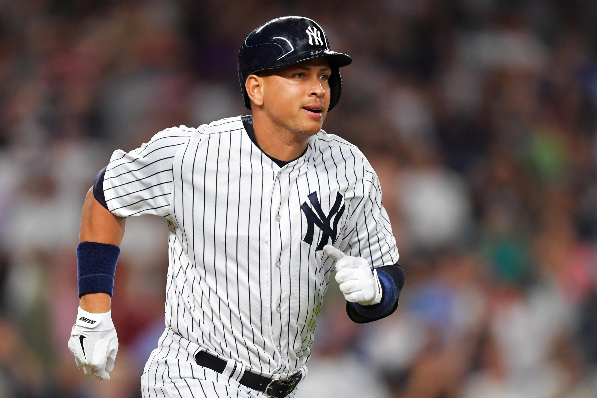 | 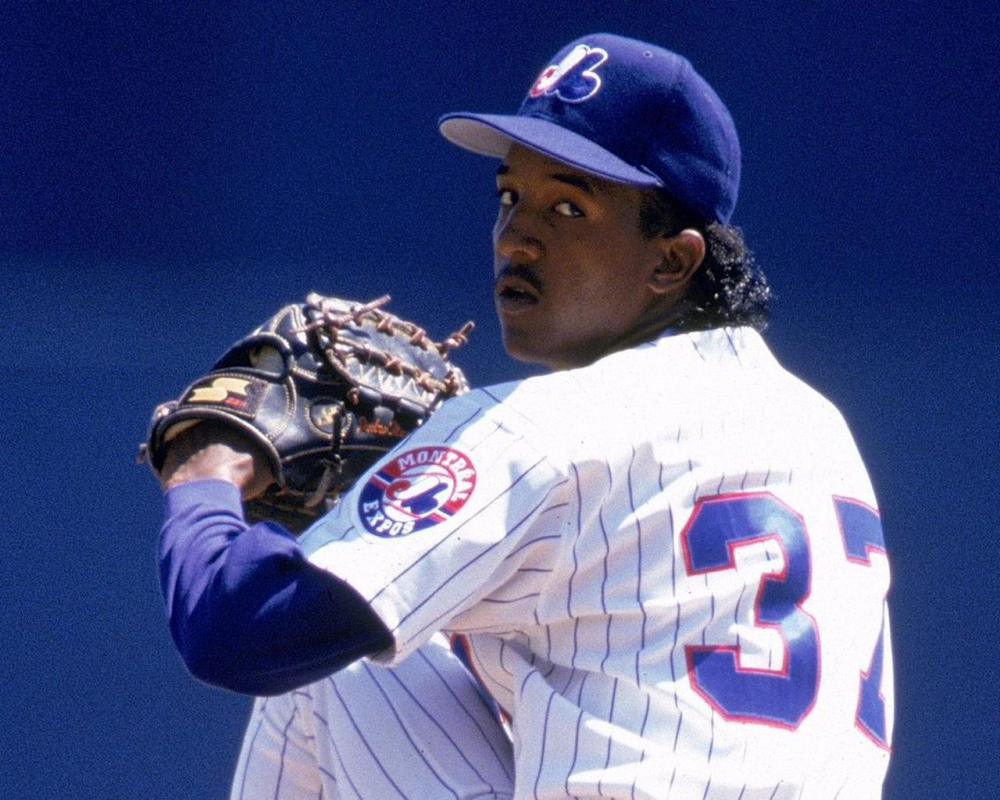 | 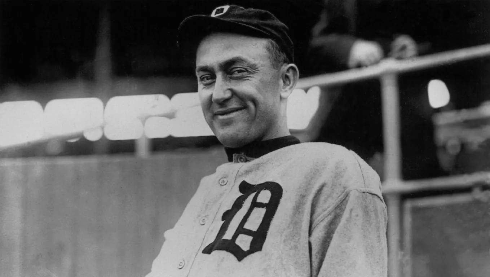 | 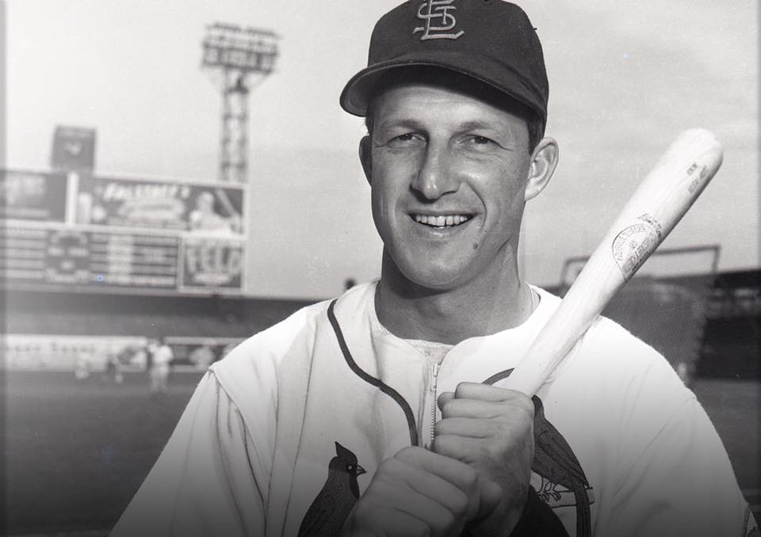 |

|
| Ted Williams | Pete Rose | Shoeless Joe Jackson | Roberto Clemente | Lou Gehrig | Jackie Robinson | |
| 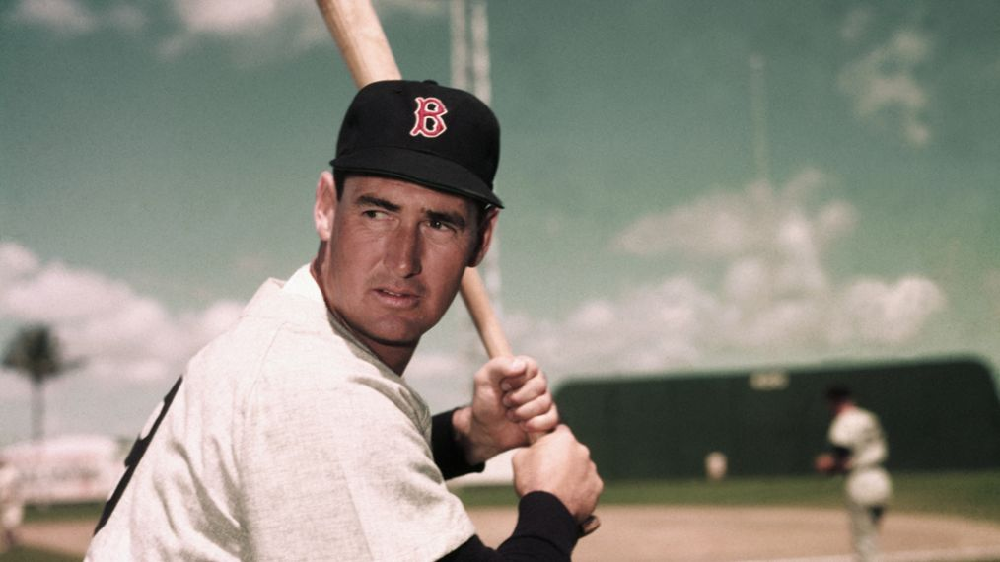 | 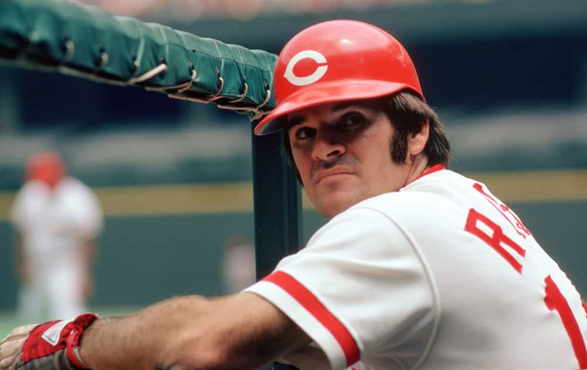 | 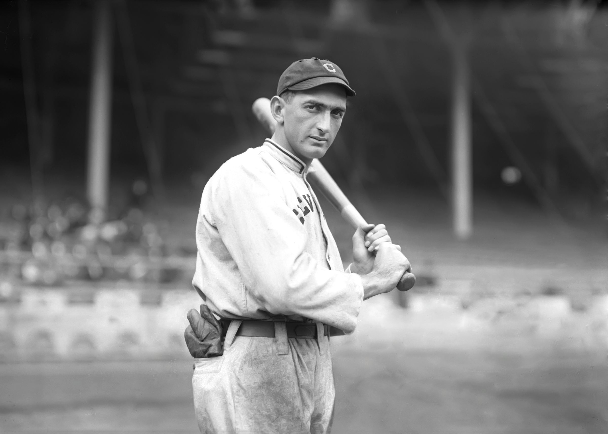 | 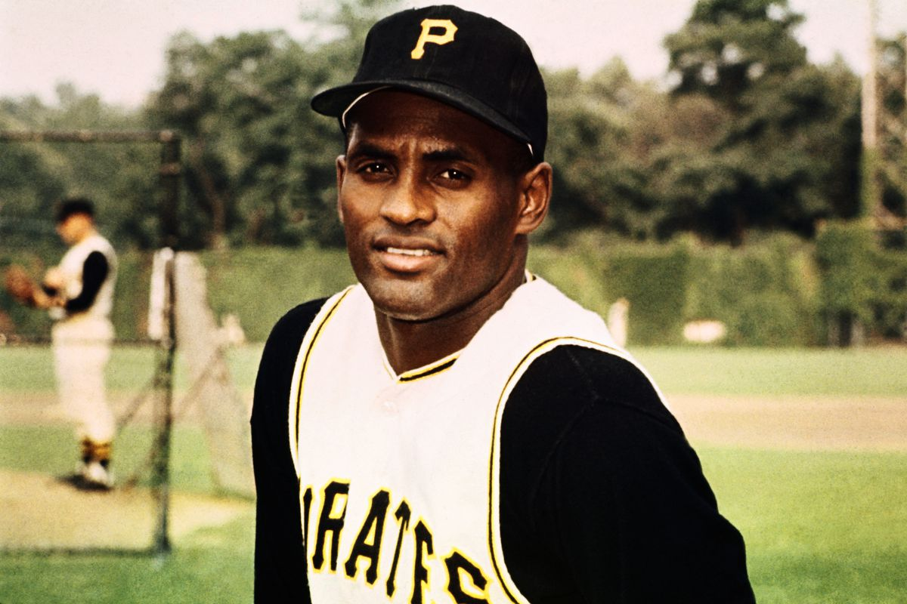 | 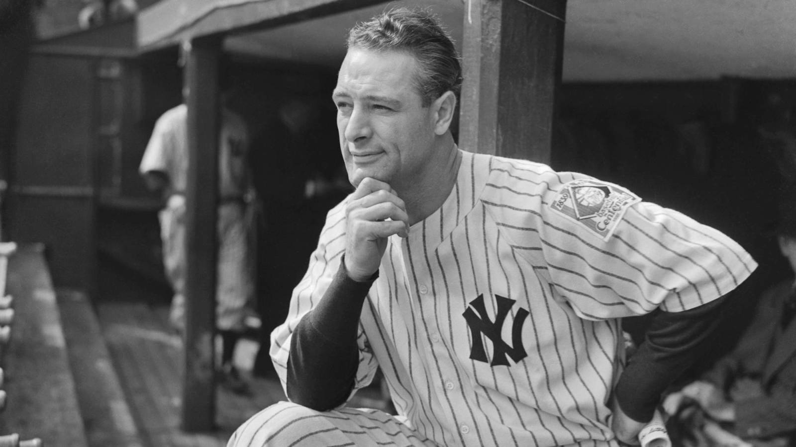 |

|
Jogadores Importantes atualmente no Beisebol
Albert Pujols
José Alberto Pujols Alcantara, mais conhecido como Albert Pujols, nasceu em 16 de janeiro de 1980 em Santo Domingo, República Dominicana. É um dos rebatedores mais prolíficos do início do século XXI, foi o 32o jogador da Major League Baseball a alcançar o 3,000 Hit Club, o nono membro do 600 e quarto membro dos 700 Home Runs Club a fazê-lo. Em 2017, Pujols se tornou o nono jogador na história da MLB a rebater 600 home runs na carreira. Em 2022, Pujols assinou um contrato de um ano com o St. Louis Cardinals e anunciou que a próxima temporada seria sua última, pois pretendia se aposentar após a temporada de 2022. A partir de 2022, Albert Pujols é o jogador ativo mais antigo da Major League Baseball aos 42 anos, e geralmente é considerado um Hall da Fama infalível com base em suas estatísticas de carreira. À medida que Pujols se aproximava do fim de sua ilustre carreira de 22 anos, ele se juntou ao clube de home runs mais exclusivo da história do beisebol. Dos mais de 20.000 jogadores que participaram de um jogo da MLB, Pujols se juntou a Barry Bonds, Hank Aaron e Babe Ruth como um dos únicos quatro jogadores da AL/NL a alcançar 700 home runs.
Em 2001, Pujols ganhou o prémio de Rookie do Ano da Liga Nacional. Embora tenha terminado em segundo lugar na votação do MVP da NL em 2002 e 2003, ele ganhou seu primeiro prémio de MVP da NL em 2005. Em 2003, ele foi nomeado Jogador do Ano da Major League, recebeu o Prêmio Hank Aaron da NL de 2003 e ganhou o título de rebatidas da NL em 2003. Em 2004, Pujols foi o MVP da NL NLCS. Ele ganhou mais dois prémios nacionais de MVP em 2008 e 2009. Ele também foi o Jogador do Ano da Major League de 2008 e recebeu o Prémio Roberto Clemente de 2008. Em 2009, ele recebeu o Lou Gehrig Memorial Award, o NL Hank Aaron Award e o Major League Player of the Year. Ele também ganhou dois Gold Glove Awards (2006, 2010) e seis Silver Slugger Awards (2001, 2003, 2004, 2008, 2009 e 2010). Pujols é um 11 vezes All-Star para os Cardinals e Angels, e um bicampeão da World Series com o St. Louis Cardinals.
Aaron Judge
Aaron James Judge, nascido em 26 de abril de 1992, é um defensa direito (campo externo) dos New York Yankees. Judge foi selecionado por unanimidade como o Rookie do Ano da Liga Americana (AL) em 2017, e terminou em segundo lugar na votação para o AL MVP naquele ano. Em 2022, ele estabeleceu o recorde da AL para o maior número de home runs em uma temporada com 62, quebrando o recorde de 61 anos de Roger Maris e ganhando o AL MVP. Ao contrário da maioria dos atletas profissionais, Judge passou toda a sua carreira na MLB até agora com os New York Yankees. Embora Judge seja um talentoso jogador de campo externo, ele fez um nome para si mesmo e construiu seu status em torno de sua rebatida, e especificamente na sua capacidade de acertar home runs.
Devido ao seu incrível talento, Aaron Judge recebeu muitos prêmios e honras de beisebol ao longo de sua carreira profissional jogando pelo New York Yankees na MLB. O defensa direito ganhou seu primeiro prêmio profissional em 2017, o Prêmio Esurance MLB, por ser o melhor rookie da liga. Na temporada de 2017, Aaron Judge ganhou mais 12 prêmios de várias organizações e marcas de beisebol, elogiando o nativo da Califórnia por suas habilidades e habilidades, como ser selecionado como Rookie do Ano pela Sporting News, Baseball America e BBWAA. Em 2019, Aaron Judge ganhou o prêmio Wilson Defensive Player of the Year por seu excelente desempenho no campo externo. Isso foi seguido por dois prêmios de Jogador da Semana da MLB na temporada de 2020. As temporadas de 2021 e 2022 de Aaron Judge provaram ser o seu maior sucesso, já que o talentoso slugger ganhou o Fielding Bible Award em 2021, Jogador da Semana da MLB e o Silver Slugger Award 2021. Em 2022, Judge ganhou o Hickok Belt, três Prêmios de Jogador do Mês, três Prêmios de Jogador da Semana e também ganhou o MVP da AL em 2022.
Shohei Ohtani
Shohei Ohtani, nascido em 5 de julho de 1994, apelidado de "Shotime" é um pitcher de beisebol profissional japonês, batter designado e defensa externo pelos o Los Angeles Angels. É o primeiro jogador desde Babe Ruth a ser um two-way player de impacto, realizando o que parecia impossível possível, e é um dos melhores pitcher e batter no jogo de hoje. O batter Shohei Ohtani é um veterano da grande liga neste momento. Com mais de 2.000 aparições na carreira, Ohtani se estabeleceu como um dos melhores batters de poder do jogo. Ohtani concília as 2 posições jogando como pitcher a cada cinco dias e batter em todos tendo uma média de 6,6 entradas(por início) e tem sido o pitcher mais valioso do beisebol baseado no fWAR (FIP + Wins Above Replacement) e com um xFIP (Expected Fielding Independent Pitching) de Ohtani de 2,18 que é o melhor no beisebol.
Já jogou pelo Hokkaido Nippon-Ham Fighters da Nippon Professional Baseball's (NPB) Pacific League. Ohtani foi a primeira escolha dos Fighters no draft de 2012. Ele jogou na NPB para os Fighters de 2013 a 2017 como arremessador e defensor externo. Em 16 de outubro de 2016,Ohtani registrou o arremesso mais rápido da história da NPB a 165 quilômetros por hora (102,5 mph). O recorde foi quebrado por Thyago Vieira cinco anos depois, mas ele ainda detém o recorde japonês. Em 2017 assinou com os Angels e ganhou o Prêmio de Rookie do Ano da Liga Americana (AL) de 2018 e o Prêmio de MVP da AL 2021. A temporada de 2021 de Ohtani foi formalmente reconhecida como "historicamente significativa" e um "grande impacto no desporto"pelo Comissário da MLB Rob Manfred, já que ele se tornou o primeiro two-way player na história da MLB com mais de 10 home runs, mais de 20 bases roubadas como batter, mais de 100 strikeouts e mais de 10 aparições como pitcher na mesma temporada, além de manter pelo menos uma parte da liderança da grande liga em home runs em quatorze partidas. Ele também foi o primeiro jogador na história da MLB a ser um All-Star como pitcher e batter, pois foi titular no All-Star Game de 2021 em ambas as funções, como pitcher titular selecionado pelo gerente da AL (ganhando a vitória) e batter titular, designado, selecionado pelos fãs. Em 2022, Ohtani se tornou o primeiro jogador na era moderna a se qualificar para as tabelas de classificação de rebatidas e arremessos em uma temporada, atingindo os limites de 3,1 aparições na placa e uma entrada arremessada por jogo com 586 de bastões contra 166 entradas arremessadas.
Mike Trout
Mike Trout, nascido em 7 de agosto de 1991, é um jogador dos Los Angeles Angels. Ele é um tremendo defensa externo e é amplamente considerado um dos melhores jogadores do desporto. Os Angels selecionaram Trout direto do ensino médio, e o jovem fenômeno fez sua estréia nas grandes ligas aos 19 anos. Trout teve uma das maiores carreiras jovens de qualquer jogador na história do beisebol desde sua chamada para a MLB. Mike Trout já se solidificou nos livros de história, e está apenas entrando no auge de sua carreira. Possui uma incrível habilidade geral em ataque e defesa. No ataque, Trout é um rebatedor disciplinado que tem uma das maiores porcentagens na base da liga. Além disso, Trout possui instintos defensivos incríveis, tornando-o um outfielder de elite da MLB.
Durante a primeira temporada completa da grande liga de Mike Trout em 2012, ele se classificou para a equipe AL All-Star e ganhou o AL Rookie of the Year. Terminou em segundo lugar na votação do MVP da AL durante sua campanha de estreia. Desde 2012, Trout terminou pelo menos o top 4 na votação do MVP da AL em cada uma de suas oito temporadas disputadas nos majors. Ele ganhou o MVP três vezes, em 2014, 2016 e 2019. Trout também está empatada em segundo lugar de todos os tempos, com sete acabamentos de votação do Top 2 MVP. Trout é um All-Star perene, tendo perdido a seleção para o Midsummer Classic apenas uma vez, em 2011, quando tinha 19 anos e só havia jogado em 40 jogos. Ele ganhou prémios consecutivos de MVP do jogo All-Star em 2014 e 2015. Trout também ganhou oito prémios Silver Slugger e dois prémios AL Hank Aaron. O Silver Slugger é concedido ao melhor jogador ofensivo em cada posição, enquanto o Prémio Hank Aaron é concedido ao melhor jogador ofensivo geral de cada liga.
Menções Importantes:
| Fernando Tatis Jr. | Juan Soto | Bryce Harper | Mookie Betts | Jacob deGrom | Vladimir Guerrero Jr. | Freddie Freeman |

|
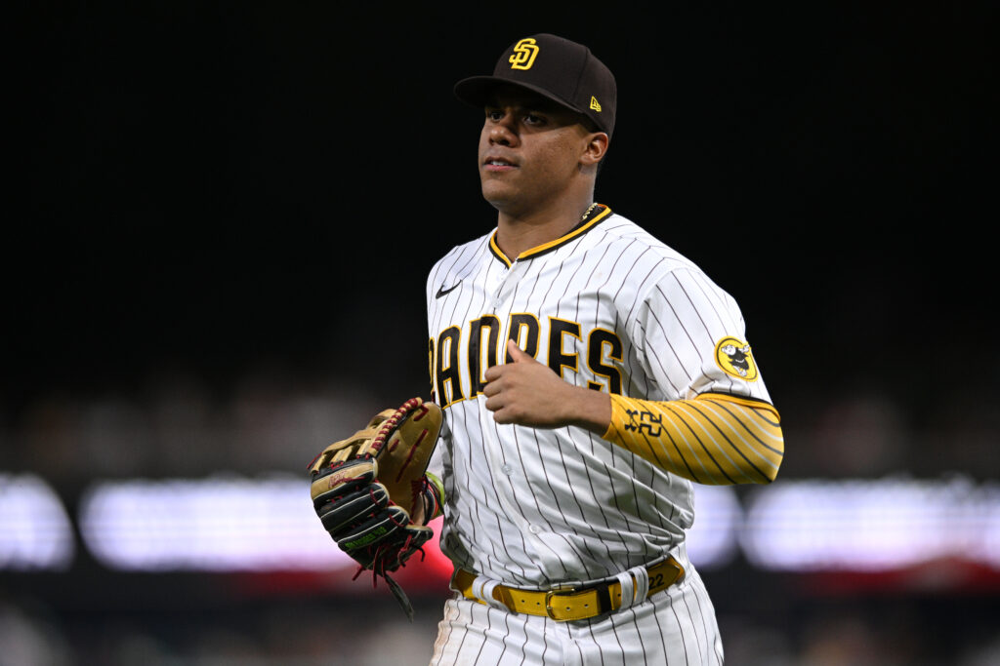 | 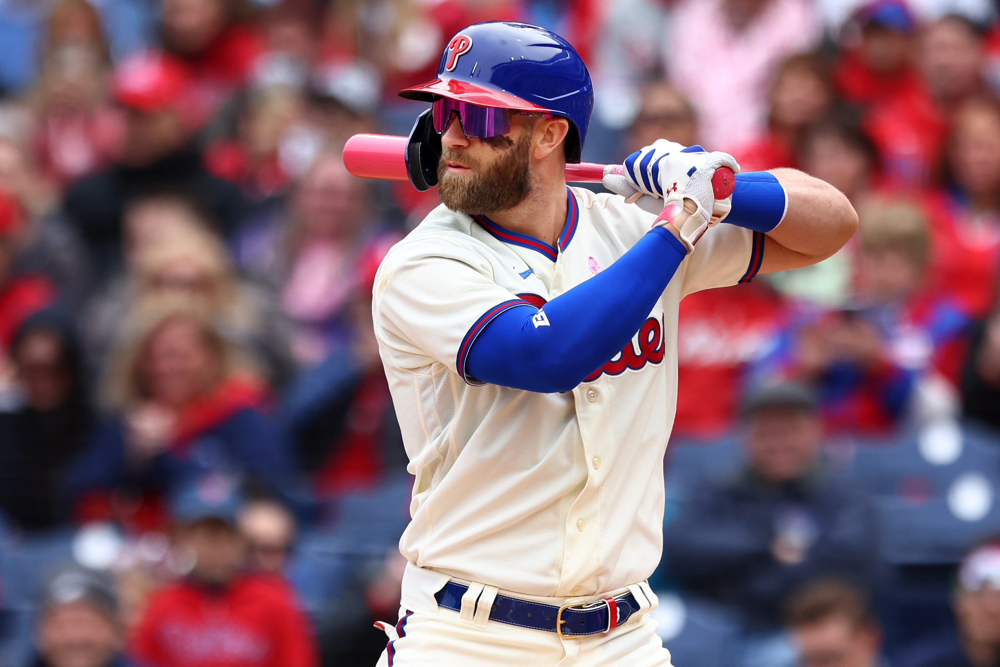 | 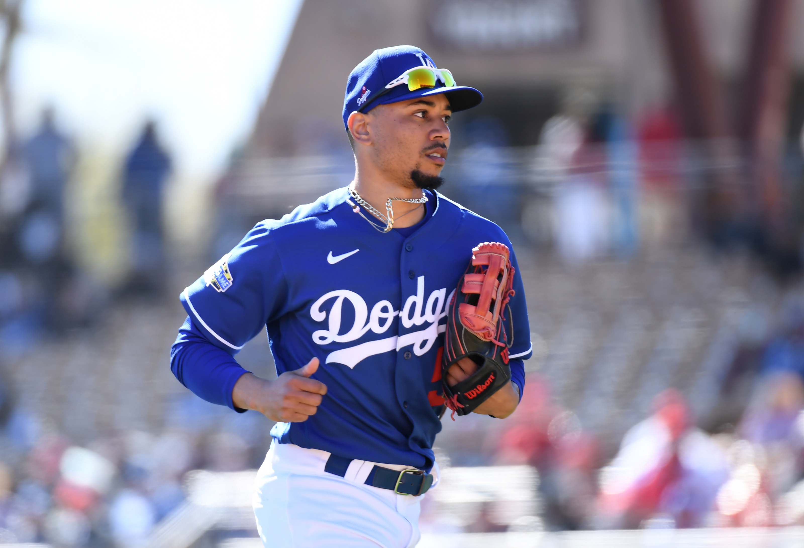 |

|
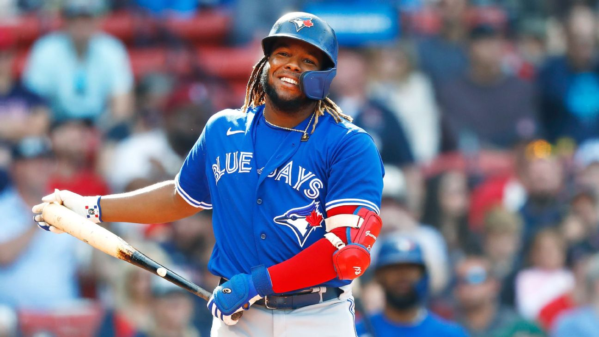 | 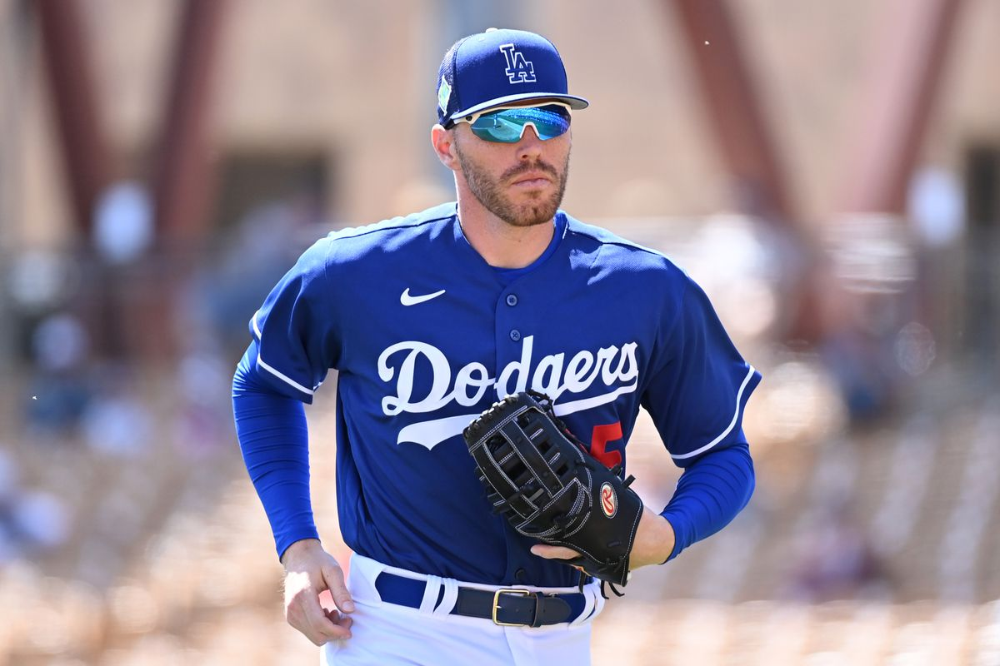 |
| Ronald Acuña Jr | Anthony Rendon | Max Scherzer | Dylan Cease | Yordan Alvarez | Manny Machado | |

|
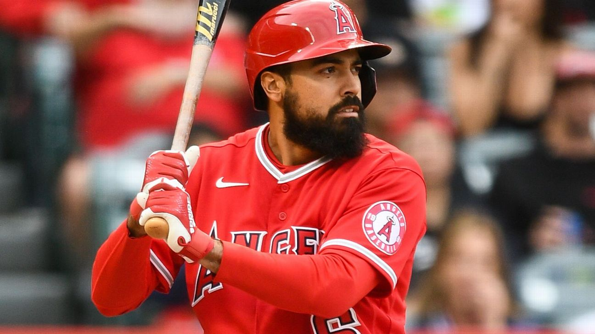 | 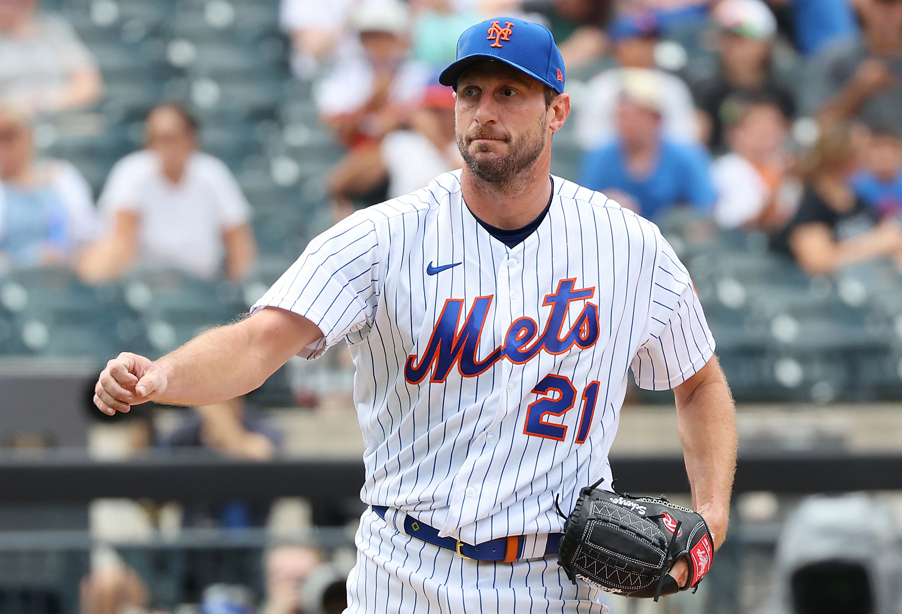 | 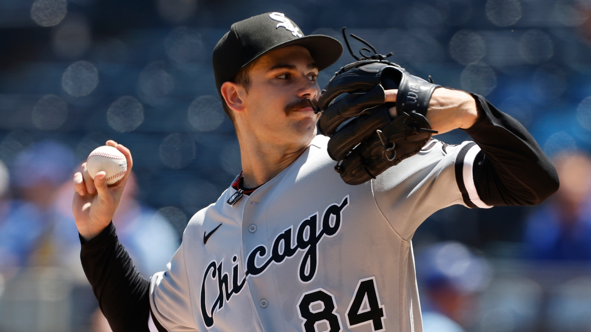 | 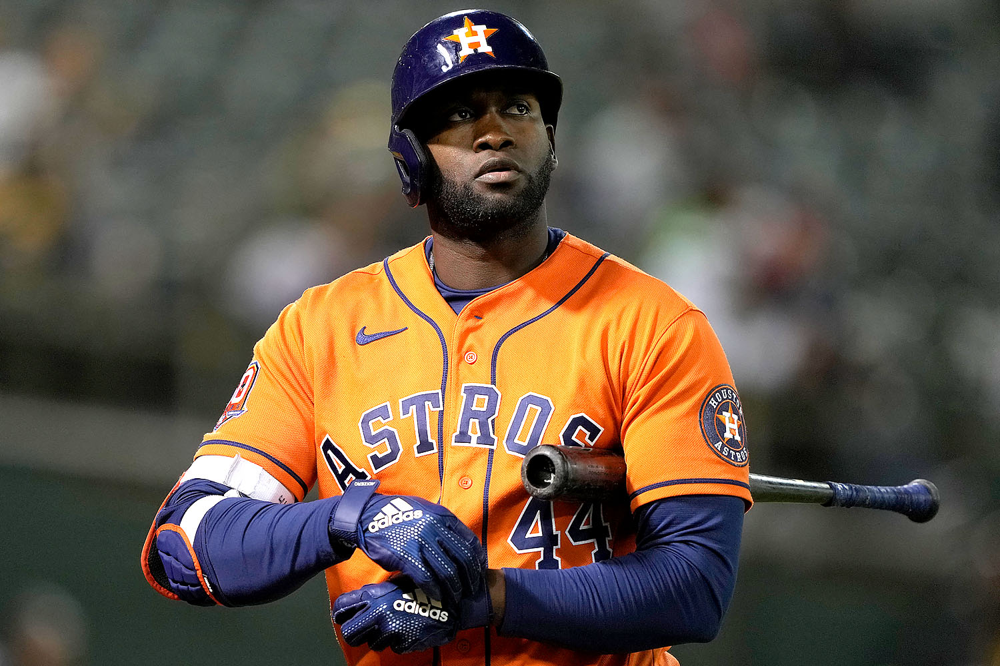 | 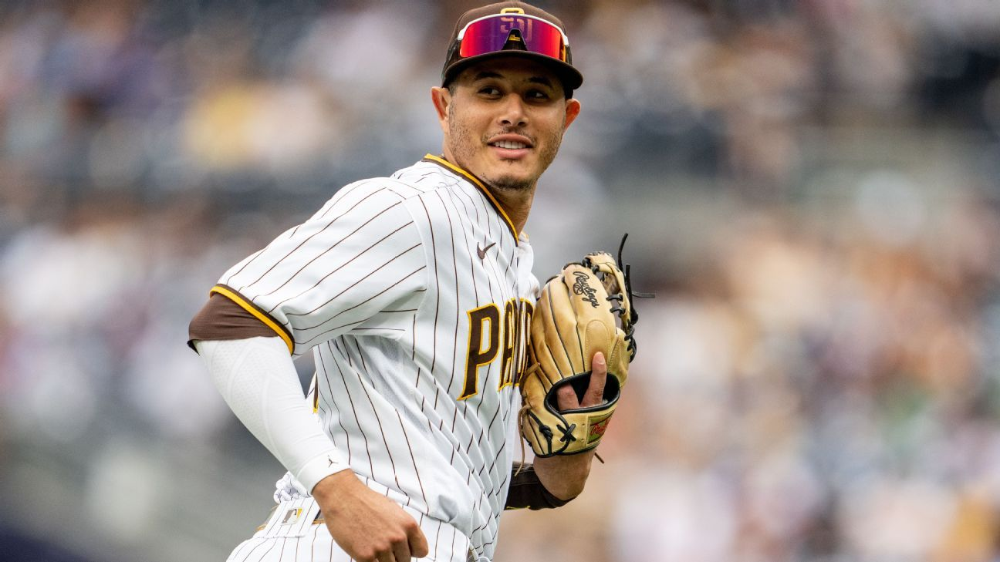 |